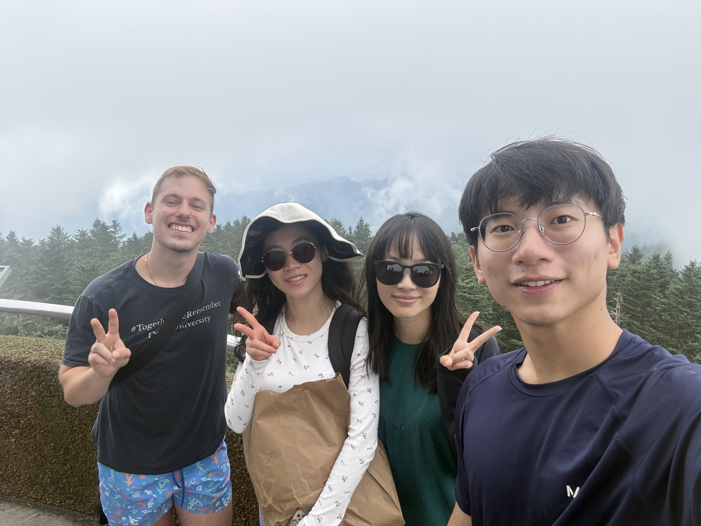
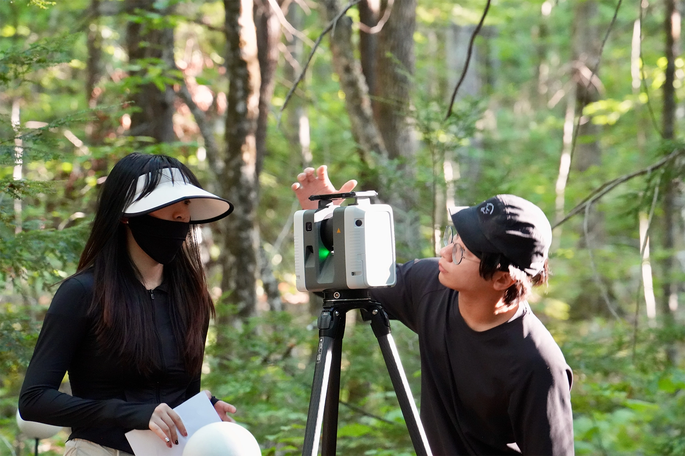

TLS fieldwork at NEON sites
I joined the PERS team for terrestrial laser scanning at NEON’s GRSM and MLBS sites, surveying plots and individual species.
Source: PERS Lab02 / Zejun Wu
Recent field campaigns and announcements from the PERS Lab.

I joined the PERS team for terrestrial laser scanning at NEON’s GRSM and MLBS sites, surveying plots and individual species.
Source: PERS Lab
The PERS Lab shared an award announcement recognizing Henry Yeung and me. My award’s name was not specified in the announcement.
Source: PERS LabYiting Fan and I conducted TLS fieldwork near El Yunque as part of the DOE-funded MACROCOSM project, studying tropical tree structure.
Source: PERS LabPhotos and video: PERS Lab. The photograph accompanying the award announcement shows TLS fieldwork at Bartlett Experimental Forest, not an award ceremony.